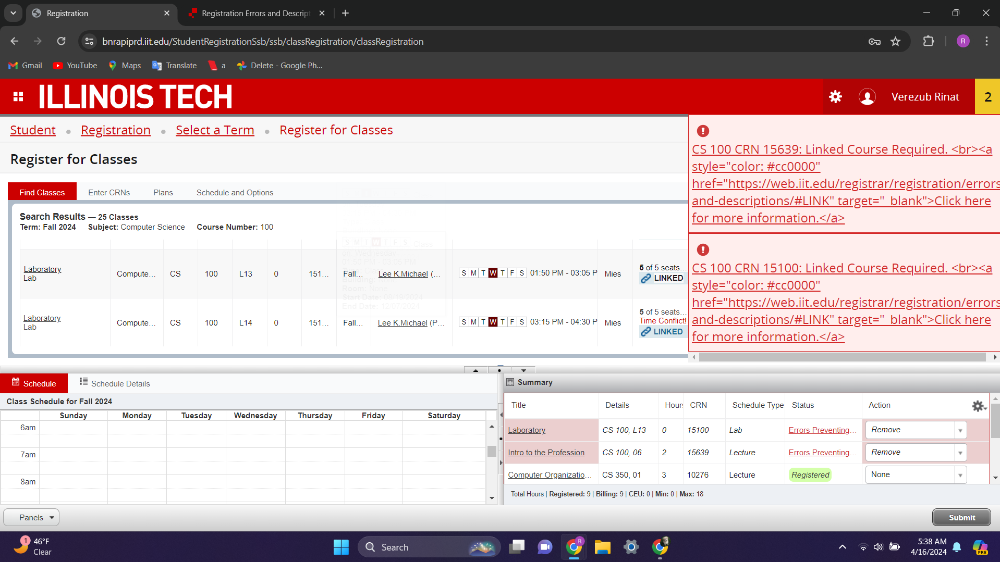

Protocol for Usability Audit
To find users, we each reached out to people in our lives and requested their participation for the study. Then we asked the user to start from the screen below to register for the following classes for the upcoming semester:
- BIOL114: Introduction to Human Biology
- CS330: Discrete Structures
- CS351: Systems Programming
- CSP200: Practical Computing
- MATH251: Multivariate and Vector Calculus
We asked users to ensure to register for only undergraduate sections and to not overlap any classes.
While the user was completing the task, the proctor was measuring the time taken and taking notes about the issues had during the process.
The participant was then asked about any issues that they may have had as well as why they had these issues and how they resolved them. After the study, the participant was also asked the following questions:
- Is the color coding of the site helpful?
- What did you like about the registration process and the UI/UX?
- What did you not like about the registration process and the UI/UX?
- Was there any part of the process that annoyed, confused, or frustrated you?
- Rate how easy and enjoyable this process was on a scale 1-10 (1 is bad, 10 is good).
Lastly, the participant was asked whether they find the following error message intuitive:
